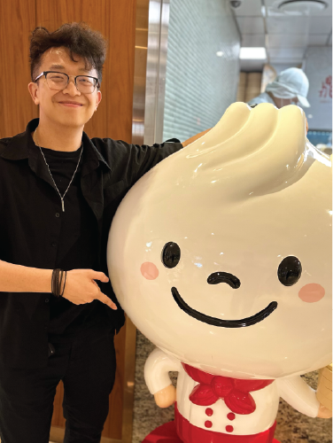

About Me

Welcome to my site! I’m Vincent Nguyen and was born in Boston where I’m developing my skills to be a designer. I’m currently a junior at Massachusetts College of Art and Design making this the digital home of some my pieces. As a kid, I was always scared to eat sushi and drink water at the same time. This is because I was told that the water would bring the fish back to life and it would swim in my stomach. This haunted me for years.